Real-time material consumption reporting for factory operators — designed to work in gloves, in noise, in motion. No desktop required.
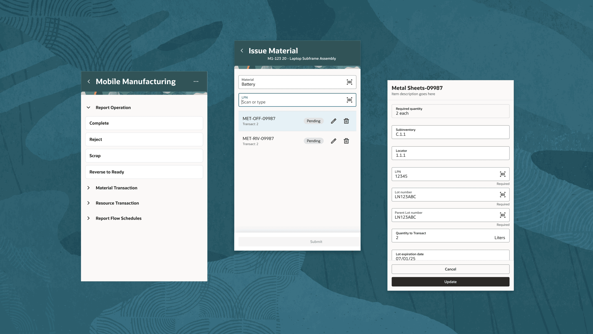
01 — The Problem
Oracle's Operator Workbench (OWB) is a comprehensive desktop application that lets operators report operation completions, issue and return materials, and report scrap. Powerful — but entirely stationary.
This created a real business gap: a growing share of industrial manufacturers now run production reporting on mobile and handheld devices, yet OWB kept operators tethered. They were commuting to terminals between every task, breaking their workflow and introducing latency into the production record.
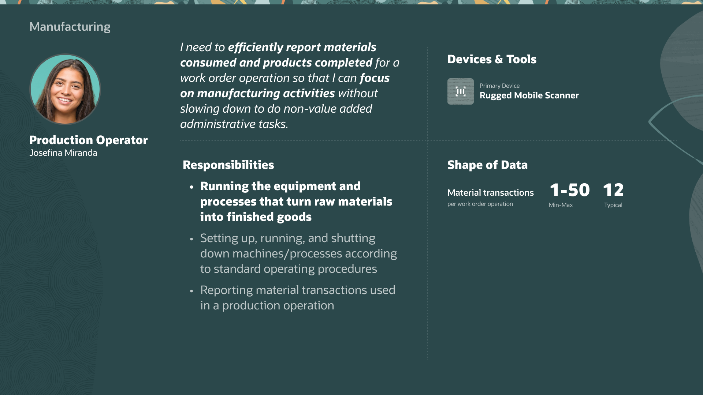
Production Operator persona — responsible for running equipment and reporting material transactions.
This wasn't a technology-led feature. Oracle's own readiness documentation frames it around observed shop-floor conditions — operators who aren't tied to a fixed workstation and need to report as work happens:
"In manufacturing environments with fast-paced operations where multiple components are used in an operation, it is common to use industrial handheld mobile devices to report production activities."
Oracle Readiness documentation · Mobile Material Issue & Return
Customer research and ongoing feedback surfaced the same pattern: operators often lacked access to fixed workstations, leading to delayed transaction reporting and manual data entry — the exact workflow this mobile, barcode-driven experience set out to replace.
Empower factory operators to report material consumption in real-time at the point of work — eliminating the "commute" to a stationary desktop terminal entirely.
The Existing Desktop Experience
Operator Workbench: Report Materials Flow
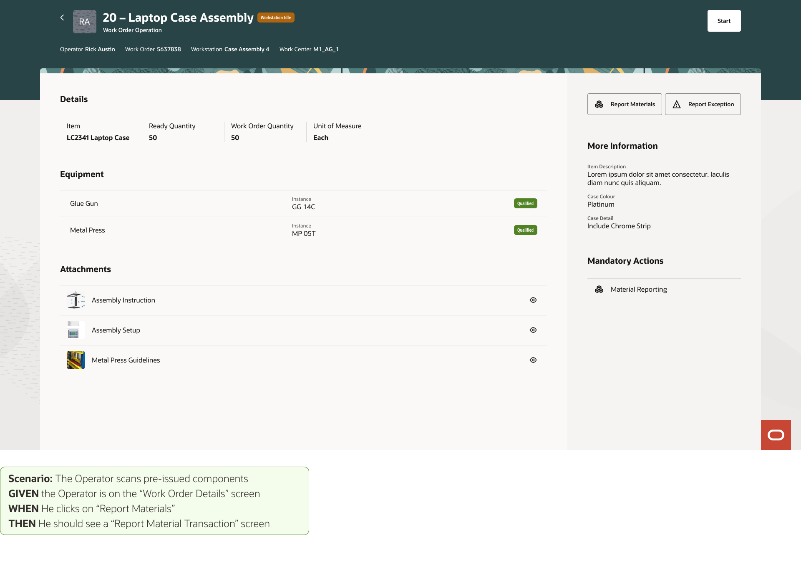
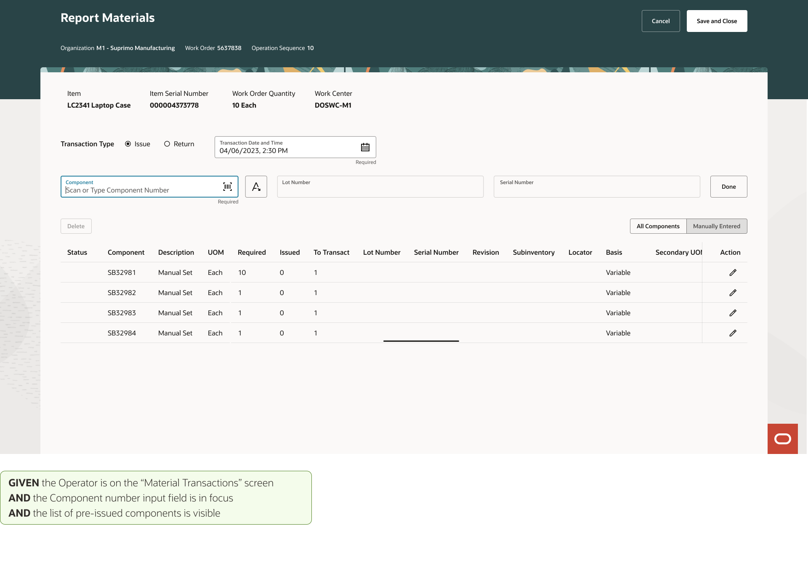
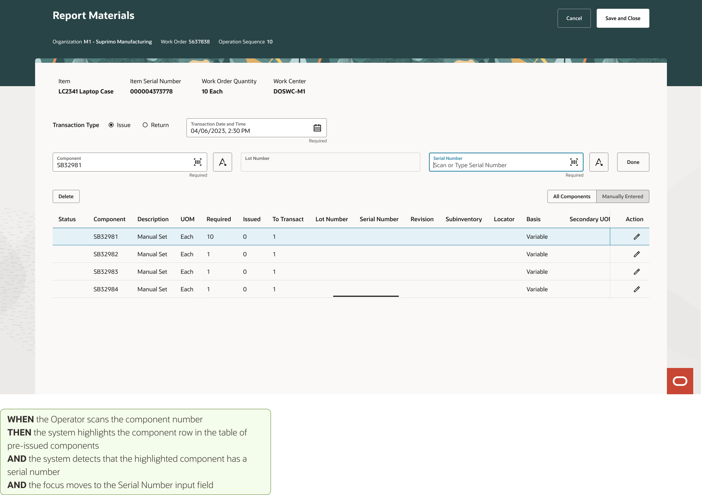
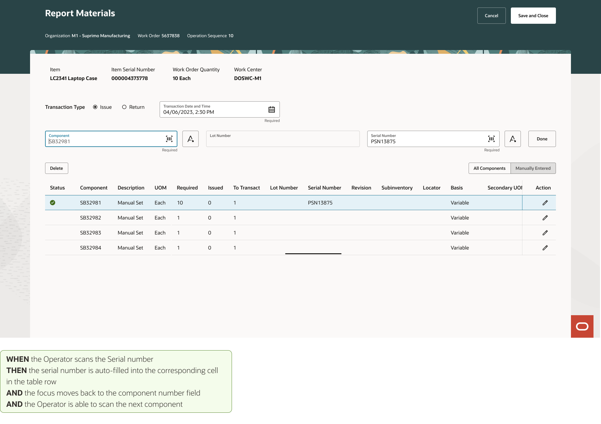
02 — The Conflict
The most significant challenge wasn't the UI — it was alignment. Three compounding obstacles threatened to derail the project before design could begin.
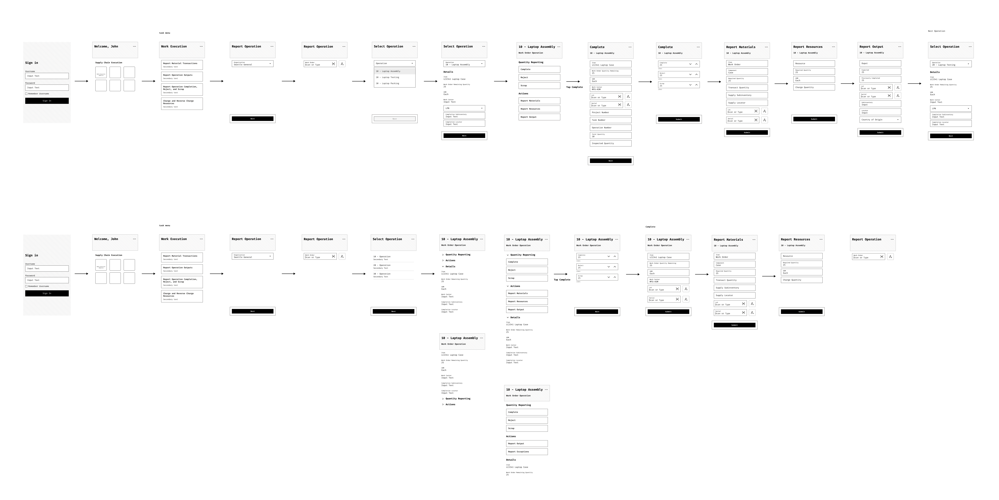
Initial lo-fi wireframes built from fragmented documentation — rejected for not matching unwritten requirements.
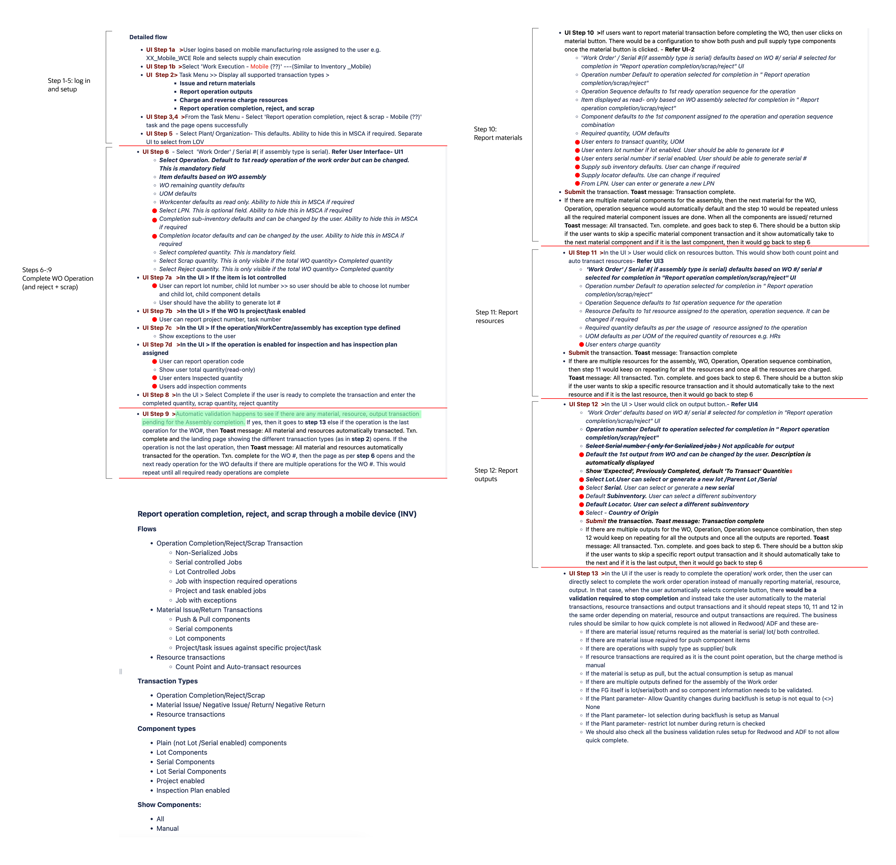
An example of the fragmented requirements documentation — dense, nested logic that frequently contradicted other docs, with no clear source of truth.
03 — The Pivot
Three weeks in, a review with the VP of Manufacturing Engineering revealed a massive oversight. The initial assumption: "mobile" meant a smartphone interface.
This was wrong.
Users weren't using iPhones — they were using rugged barcode scanners (Zebra/Honeywell). Bulky, industrial devices with small screens and physical keypads. The frame needed to be wider and shorter. And this wasn't a mobile view of OWB — it was a standalone application launched from the Oracle Fusion page.
This single insight shifted the entire UX philosophy — from "responsive web" to "industrial-first native app." Every design decision that followed was filtered through one question: does this work in a factory, with gloves, in low light, under noise?
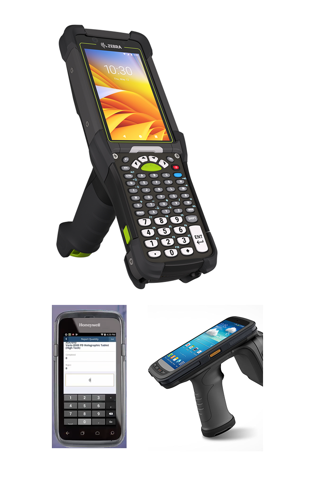
The actual hardware: Zebra and Honeywell rugged scanners with physical keypads and small screens.
04 — Design Principles
Initial "mobile site" mocks were abandoned in favor of three principles shaped by the physical environment — gloves, loud noise, motion, low light.
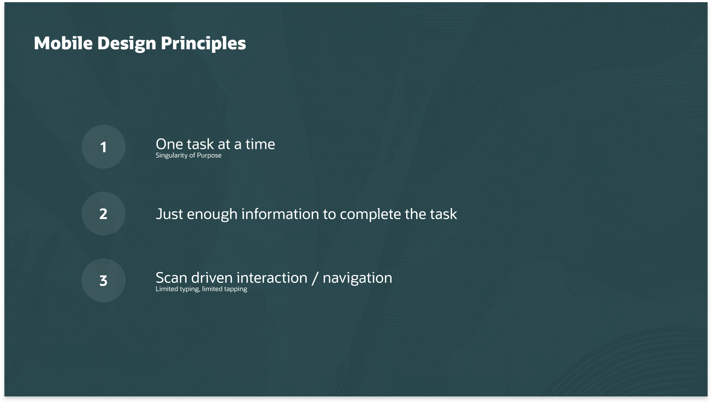
Operators work in high-stress environments. The UI focuses on a single active task at a time — no clutter, no unnecessary navigation — to reduce decision fatigue.
Rugged scanners have limited screen real estate. Instead of showing all input fields at once, the system detects what each material requires and reveals only those specific fields.
Tapping a screen with gloves is difficult. The hardware's built-in scanner drives the UI — scanning a material automatically selects it and triggers the next logical input field.
05 — Component Exploration
Multiple iterations of the Redwood List Item component were explored to find the right balance between data density and instant glanceability on a small screen.
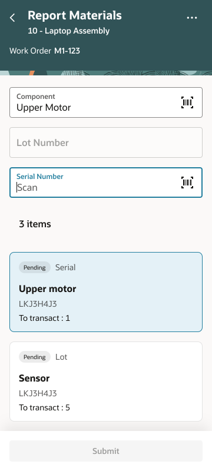
Early exploration — all fields visible simultaneously, overwhelming on small screens.
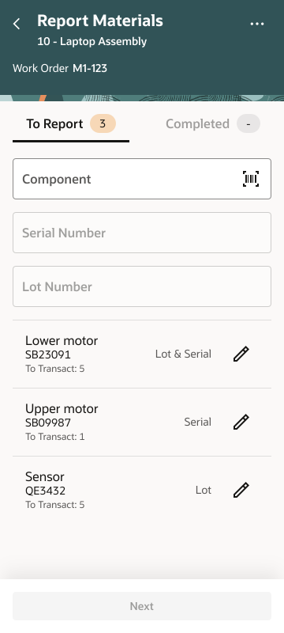
Tabbed To Report / Completed split — better task separation but added navigation overhead.
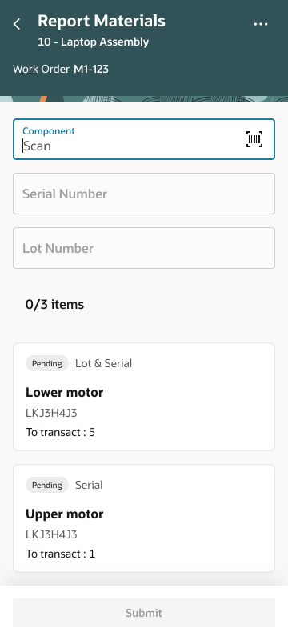
Progressive disclosure approach — fields appear contextually as the operator scans.
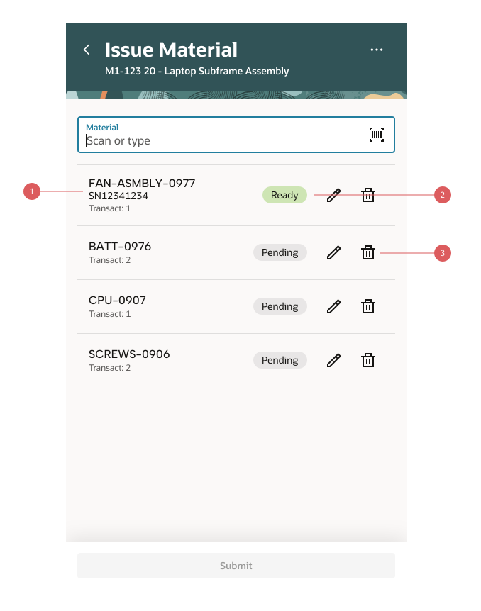
Final anatomy of the scannable list item — three annotated zones for primary ID, status, and quick actions.
Primary Line: Material Number — the unique identifier operators look for first.
Secondary Line: Transact Quantity + Unit of Measure — exactly how much is needed, no extra tap required.
Pending (Grey): Work still to do.
Ready (Green): All data captured — serial, lot, LPN confirmed.
Operators can scan a long list and instantly see what remains without reading every row.
06 — The Solution
The Redwood Design System was leveraged to create a high-density, efficient reporting experience. The happy path is entirely scan-driven — operators rarely need to type a single character.
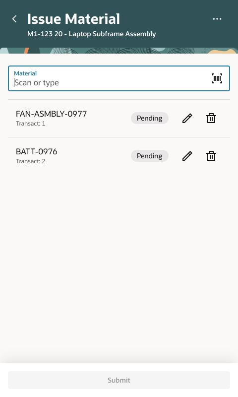
State 1 — Pre-issued materials listed with status badges. Submit disabled until all reported.
Pre-issued materials are displayed with clear Ready vs. Pending status badges for quick scanning in low-light factory environments. The material scan field is in immediate focus — no extra taps to begin.
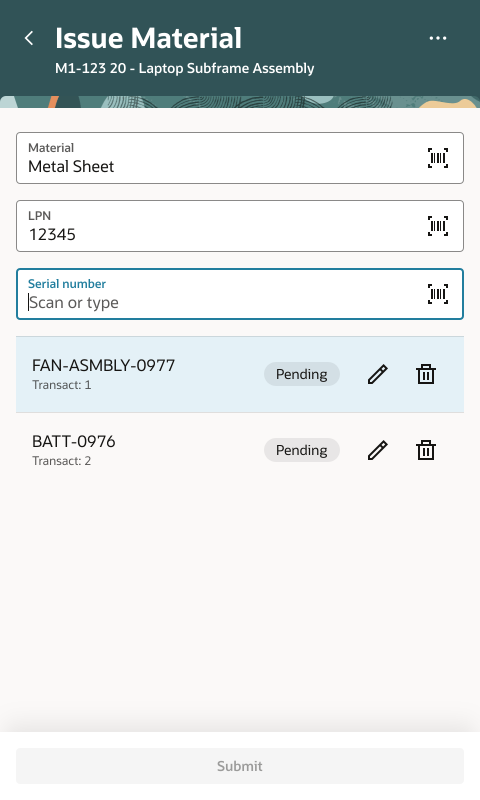
State 2 — Scanning a material highlights it in the list and reveals only its required fields.
Once the operator scans a material barcode, the system detects what that specific material requires — Lot, Serial, LPN — and surfaces only those fields. No decision fatigue, no blank fields to ignore.
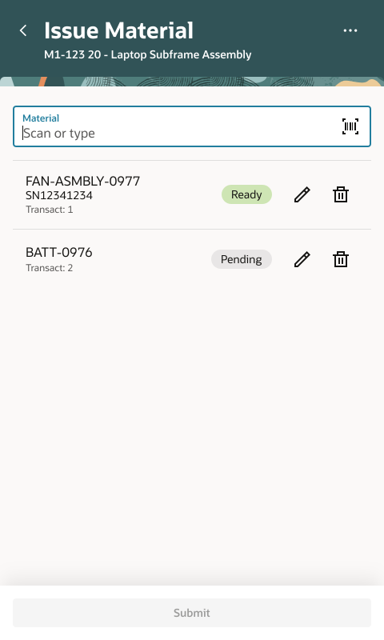
State 4 — All required fields filled. Badge flips from Pending → Ready. Submit activates.
As each material is scanned and its fields completed, the badge changes from Pending to Ready. The Submit button activates only when every material is accounted for — a built-in quality gate.
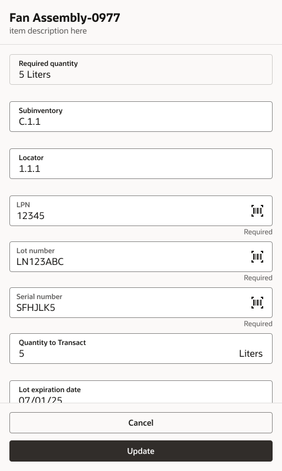
The Detail Drawer — a full-screen editor for split quantities and locator edits, accessible via the Edit icon.
The primary "Happy Path" stays lean and scan-driven. For rare cases — like splitting quantities or editing locators — a full-screen drawer provides a complete editing surface without cluttering the main list. Complex tasks accessible but out of the way.
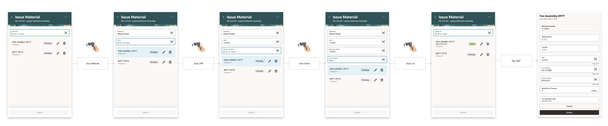
Final Issue Material UI — the complete scanning flow from list to submission.
07 — Additional Flows
The core scanning flow handles the majority of transactions — but two additional flows round out the full operator experience.
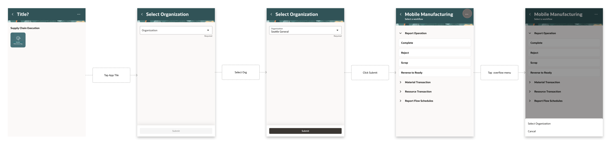
App Launch & Organization Switching — selecting an organization on first launch to set the work context.
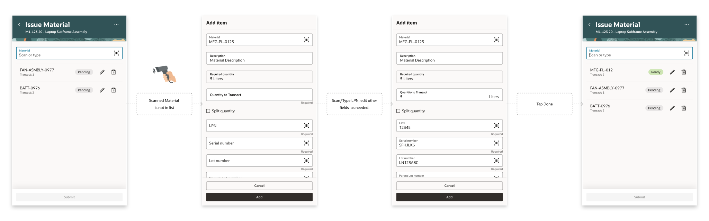
Ad-hoc Material Issue — issuing materials not pre-listed on the work order, including split quantity and LPN capture.
08 — Impact
The point was never a nicer screen — it was moving production reporting off the shared desktop and onto the floor, at the moment work actually happens. Concretely, the design shifts:
The Material Issue flow shown here is one piece of a broader Oracle move to the floor: the Redwood Production Reporting release brought barcode-enabled mobile support to six core transaction types — Material Issue, Material Return, Operation Completion, Scrap, Rejects, and Product Outputs — replacing paper forms, fixed workstations, and delayed entry with point-of-work reporting.
"The proactive field injection is a game-changer. We won't have to train operators on which materials require a Lot vs. a Serial number — the UI just tells them what to do next."
09 — Reflection
A project that tested not just design craft but alignment, communication, and the willingness to challenge assumptions — even three weeks in.
10 — What's Next
The impact above describes what the design changes about the workflow — not measured field results. The honest gap in this project: as an enterprise feature handed to engineering, I never had direct access to the factory floor to test with real operators before handoff. That's the first thing I'd close — and I'd hold the design to measurable outcomes, not assertions.
A moderated usability test on actual Zebra/Honeywell hardware, in a real or simulated floor environment — gloves on, low light, ambient noise. The core question: can an untrained operator complete a material report without help?
Once live, the design's value should show up in the production record itself — measured against the stationary desktop flow it replaced.
Shipping a clean handoff isn't the finish line — proving it works for the person in gloves on the floor is. If I ran this again, operator testing would come before the engineering handoff, not after.